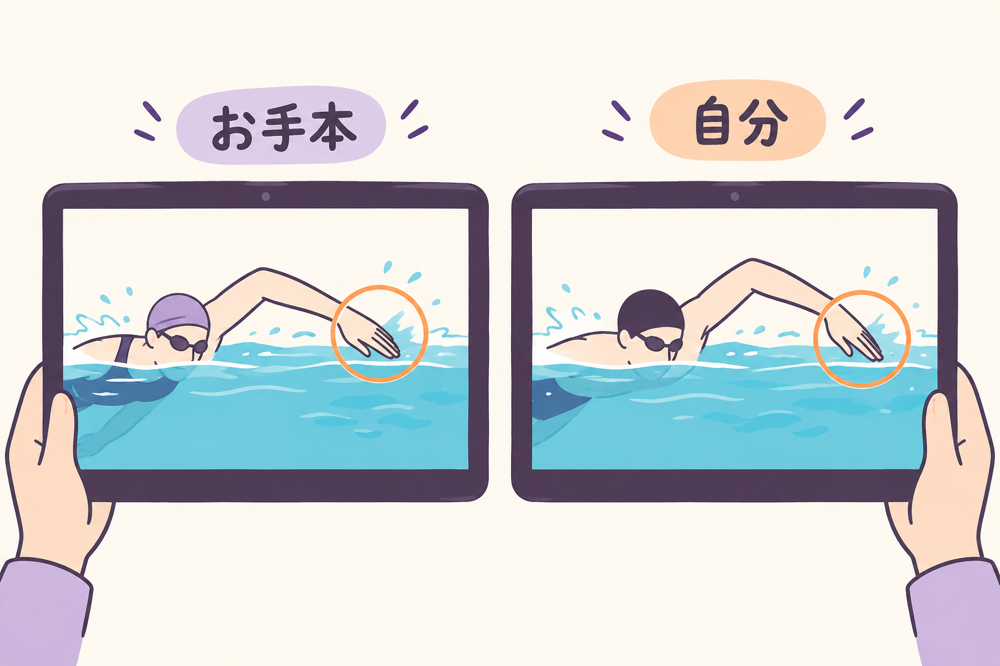
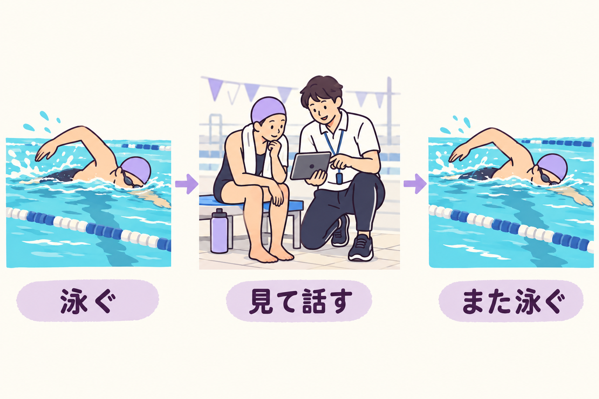
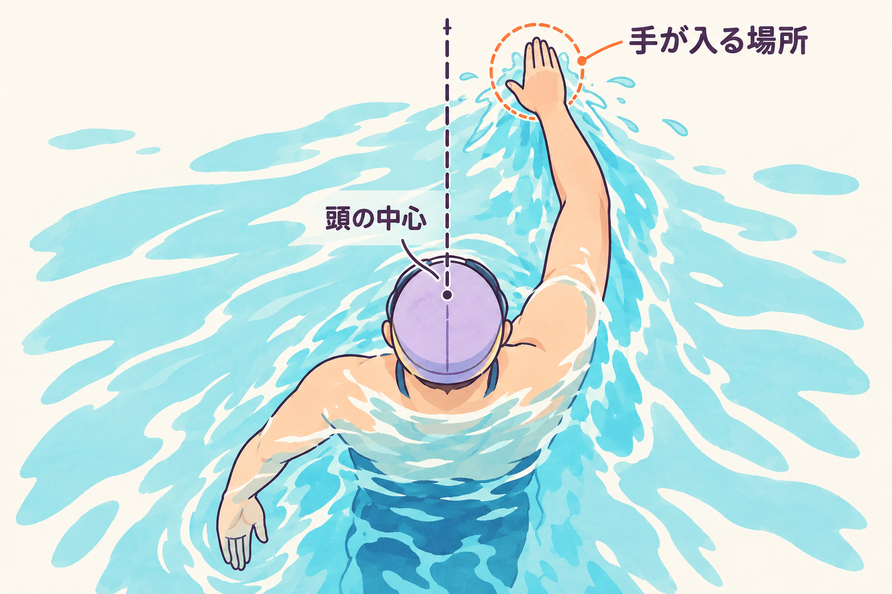
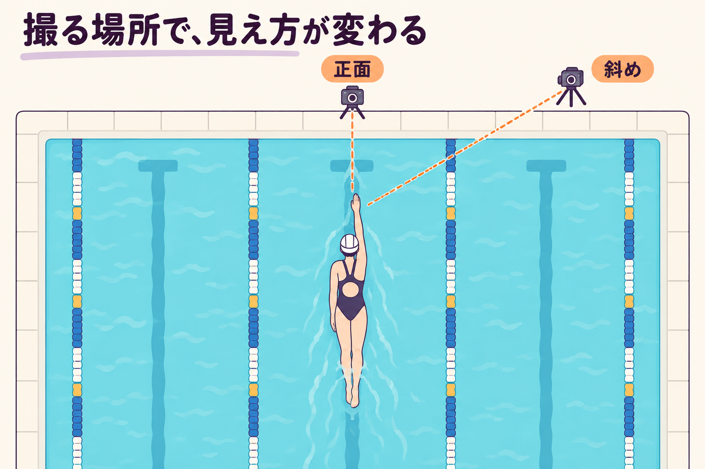
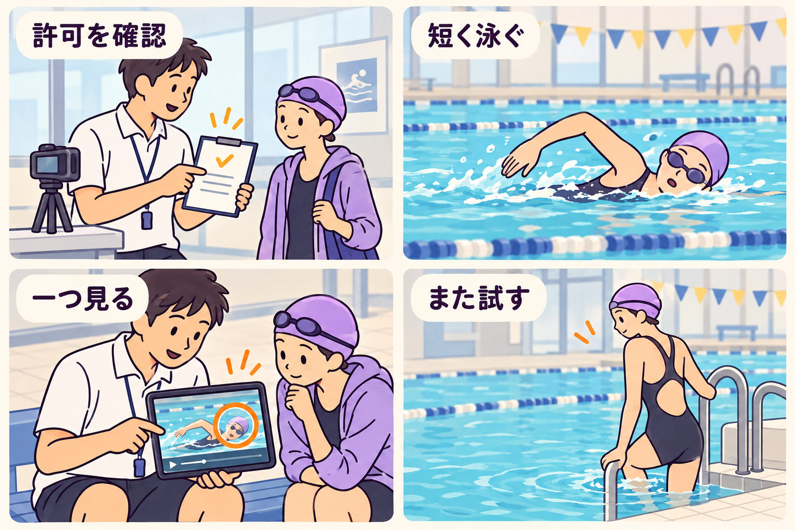

SWIMMING RESEARCH / 11
泳ぎの動画、見るだけで上達する？
2026年10月26日 · 映像と泳ぎの振り返り

泳ぎのお手本を見て、「なるほど」と思ったのに、プールでは同じように動けない。自分の動画を見たら、想像していた泳ぎと違って、どこから直せばよいのか分からなくなる。そんなとき、動画を増やす前に、見方を少し変えてみませんか。
動画は、次に確かめることを見つける道具になります。 ただし、見るだけで泳ぎが身につくとは言えません。研究で調べられているのも、映像を見ながら説明を受け、実際に泳ぐ練習と組み合わせた方法です。今日は「全部直さなければ」をいったん置いて、自分の泳ぎに一つ質問をするところから始めましょう。
1 お手本を見ることと、自分を見ることは違う
お手本の動画では、「どんな動きがあるのか」を見ることができます。例えば、クロールで手が水へ入るとき、頭と手がどの位置にあるか。言葉だけでは想像しにくい動きを、繰り返し見られるのが映像のよさです。
一方、自分の動画が教えてくれるのは、「そのとき、自分はどう動いたか」です。「まっすぐ手を伸ばしたつもり」と、画面に映った位置を照らし合わせられます。ただし、お手本と形が違うだけで、直すべき欠点と決めることはできません。泳ぐ速さ、体格、撮った向きが違うかもしれないからです。
二つの動画に、別の質問をする

どんな場面・位置を見るとよいかを探す。
同じ場面で、自分はどう動いていたかを見る。
ここでは二つの動画に、別の役割を持たせます。お手本には「何を見ればよいか」を聞く。自分の映像には「同じ場面で、自分はどうなっていたか」を聞く。どちらか片方が、いつでも優れているという話ではありません。
例えば今日は、手が入水する位置を見ると決めます。入水とは、空中を戻ってきた手が、再び水に入ることです。映像全体をぼんやり眺めるよりも、「手が水に触れる瞬間」を探す、という具体的な見方に変えられます。
2 研究で確かめたのは、見ることと泳ぐことの組み合わせ
Giannousiらの研究では、競泳経験のない男子大学生60人が、7週間の練習に参加しました。自分の映像と指導者の言葉を使う方法、お手本映像と言葉を使う方法、言葉による方法などを比べています。
技術評価は、手の入れ方や呼吸時の動きなど、研究で決めた項目を指導者が見て採点したものです。自分の映像を使った群は、他の群よりこの評価が高くなりました。一方、25mを泳ぐ速さには、群の間で明確な差が認められませんでした。動きの評価がよくなることと、すぐタイムが縮むことは、同じではないと読む必要があります。原著
見る・話す・泳ぐをつなぐ

- 1実際に泳ぐ
練習の中で動きを経験する。
- 2映像と説明で振り返る
自分の映像やお手本を、指導者の説明と組み合わせる。
- 3次の泳ぎで確かめる
映像を見るだけで終わらせず、再び動いてみる。
この実験では、太ももの間に浮き具をはさむなど、泳ぎ方の条件が決められていました。男性の若い大学生についての結果を、子どもやマスターズ、普段の泳ぎにそのまま当てはめることもできません。映像だけの効果ではなく、指導と練習を含む結果です。
学校の授業を調べたKretschmannの研究もあります。ドイツの第5学年の2クラス、計31人を、タブレット映像を使う授業と言葉中心の授業に分け、7週間比べました。映像を使ったクラスでは、授業前より25mクロールのタイムが改善しました。原著
ただし、小規模なクラス単位の比較です。映像のほかに教師の説明や学習内容も含まれ、画面を見ることだけの効果は取り出せません。また、一方のクラスで改善が確認されたことだけで、二つの方法の効果の差が確定するわけではありません。
二つの研究から日々の練習へ持ち帰りたいのは、「動画さえあれば」ではなく、見たことを、説明と次の泳ぎにつなぐという使い方です。
3 まず、動画に聞くことを一つ決める
ここからは、研究の実験手順をそのまま再現するものではなく、本記事の観察案です。例えば「手を入れる位置が毎回どうなっているか」を一つの質問にします。頭も腕も脚も、同時に採点する必要はありません。
まず、通常の速さで再生して、泳ぎの流れを見ます。その後、手が水に触れるところをゆっくり再生し、必要なら止めます。止めた画像は位置を見るため、通常再生は動きのつながりを見るため、と使い分けます。
手と身体の位置を見る

手が水に触れる瞬間を見る。右手なら右手どうしを比べる。
頭の中央に対してどのあたりか。見えなければ、見えないと記録する。
手の位置を見るときには、身体と手が一緒に見える場面を選びましょう。手だけを大きく切り取ると、身体に対してどこへ入ったのかが分からなくなります。「画面の右側にある」ではなく、「頭の中央に対して、どのあたりに入ったか」と言葉にします。
一回だけを見て決めず、ほかの入水でも同じように見えるかを確認します。右手なら右手どうし、左手なら左手どうしを比べます。「いつも同じあたり」「今回は少し違う」「水しぶきで見えない」。どれも、観察の結果です。見えない場面を、想像で埋めなくて大丈夫です。
この段階では、位置を大きく変える必要はありません。まず自分の感覚と映像を照らし合わせ、変える必要があるか、変えるなら何を目安にするかを指導者と相談できます。動画を見た直後に、無理に腕を外へ広げる、といった修正へ飛ばないようにします。
4 映った形だけで、原因まで決めない
カメラの位置が違うと、同じ動きでも見え方が変わります。斜めからの映像では、身体と手が重なって見えることがあります。横からの映像だけでは、手が左右のどこへ入ったかを決めにくい場合もあります。
前回と今回を比べるなら、できる範囲で撮る向きと、泳ぐ速さをそろえます。止める場面も「手が水に触れる瞬間」どうしにそろえ、入水前と入水後を混ぜないようにします。前回は全力、今回はゆっくり、という二本を並べて「形が変わったから上達した」とは言えません。条件の違いが混ざってしまうからです。
カメラの位置も、比較条件の一つ

正面と斜めでは、重なり方や奥行きの見え方が変わる。
撮る向き・泳ぐ速さ・止める場面をできる範囲でそろえる。
さらに、映像に見えるのは、主に身体の位置や動きです。手にかかる水の力や、本人が感じる息苦しさまで、そのまま映っているわけではありません。「腕がこの位置だから、進まない原因はこれだ」と、一場面だけで結論を出さないことが大切です。
例えば、手の位置が違って見えたとしても、撮影方向の違いなのか、泳ぐ速さの違いなのか、いつもの動きなのかは、まだ分かりません。次に撮る向きをそろえる、同じ楽な速さで確かめる、指導者にも見てもらう。原因を断定するより、確認できることを増やします。
見た目に加えて、「泳いでいて何が楽だったか」「どこで慌ただしくなったか」も残しましょう。映像と本人の感覚は、同じものを二回測っているのではありません。別の手掛かりとして並べると、相談する内容が具体的になります。
5 見直したら、次の一本へ持っていく
実際に試すときは、施設が撮影を認めていること、周囲の人が映らないことを先に確かめます。撮影や画面の確認は、通行やほかの泳者を妨げない安全な場所で行います。子どもや初心者は、指導者と一緒に、余裕をもって泳げる区間を選んでください。
最初の一本は、普段の楽な速さで泳ぎます。見返す前に「手はこのあたりに入れたつもり」と、自分の感覚を短く言葉にします。それから映像を見て、感じていた位置と、映っていた位置を比べます。
次の一本で確かめることを、一つ残す

- 1撮影できるか先に確認
施設の許可、周囲の映り込み、安全な撮影・確認場所を確かめる。
- 2感覚と映像を比べる
楽な速さで短く泳ぎ、どう動いたつもりかを言葉にしてから一つ見る。
- 3同じ点をもう一度確かめる
同じ向き・速さ・場面で比較。苦しさや無理が出たら慣れた泳ぎに戻す。
次の一本では、同じくらいの速さで、同じ点を確かめます。指導者と修正を決めた場合も、一度にいくつも変えず、その一点だけを試します。撮り直すなら、同じ方向から同じ場面を比べます。
変化が見えて、泳ぎに無理がなければ、別の一本でも確かめましょう。変化が分からなければ、すぐ失敗とせず、見たい場所がきちんと映っていたかを確認します。動きがぎこちなくなったり苦しくなったりしたら、慣れた楽な泳ぎへ戻し、見る点や伝え方を指導者と見直します。
撮影できないプールなら、この練習をあきらめる必要はありません。「次の一本、手が入るところだけ見てもらえますか」と指導者へ頼み、泳いだ後に感覚と照らし合わせる方法もあります。動画は必須の道具ではありません。
記録は、よい点も含めて一言で十分です。「思ったより同じ位置に入っていた」「息継ぎのときだけ違って見えた」。一度の映像で、自分の泳ぎ全体に点数をつける必要はありません。
見終わったときに、「直すところが山ほどある」ではなく、「次は、ここを一つ確かめてみよう」が残る。そのための一本として、動画を使ってみてください。
参考資料と確認範囲
- Giannousi, M., Mountaki, F., & Kioumourtzoglou, E. (2017). The effects of verbal and visual feedback on performance and learning freestyle swimming in novice swimmers. Kinesiology, 49(1), 65–73. 発行元／本文PDF。方法・評価手順・結果を確認。特定条件下の技術評価とタイムを区別して参照しました。
- Kretschmann, R. (2017). Employing Tablet Technology for Video Feedback in Physical Education Swimming Class. Journal of e-Learning and Knowledge Society, 13(2). 発行元／本文PDF。方法・結果・表1・考察を確認。小規模な授業研究として参照しました。
本記事は特定の指導動画のレビューではありません。研究で使われた動画そのものは視聴できておらず、映像の内容を見たようには記述していません。図は観察方法を説明するための模式的な挿絵で、研究参加者の映像や実測結果ではありません。